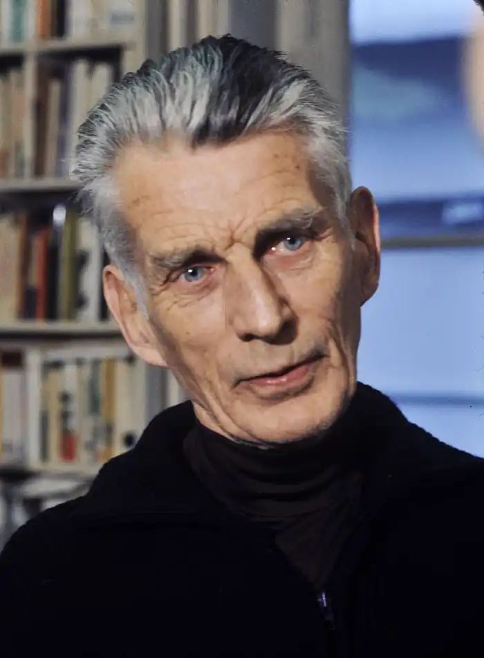
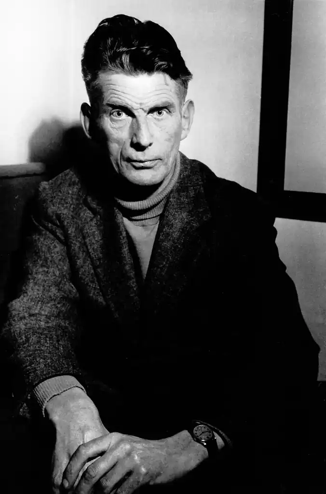
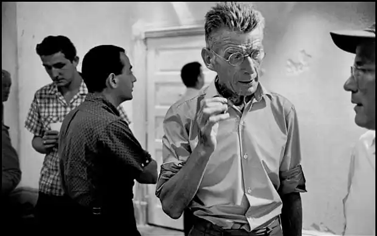

БЕККЕТ, Семюел Барклі (Beckett, Samuel Barclay — 13.04.1906, Фоксрок, графство Дублін — 22.12.1989, Париж) — ірландський письменник, лауреат Нобелівської премії 1969 p.
Батько письменника, Вільям Беккет, у 1900 р. захворів на запалення легенів і потрапив до дублінського шпиталю Аделаїди, де й познайомився і енергійною і милою медсестрою Мері (Мей) Роу, котра невдовзі стала його дружиною. У 1901 р. Вільям і Мері взяли шлюб за протестантським обрядом, через рік у них народився старший син Френк, а ще через чотири роки — молодший Сем. Сім'я майбутнього письменника належала до середнього класу, його батько керував геодезичною фірмою і намагався триматися осторонь від ірландського національно-визвольного руху, який особливо активізувався на початку XX ст. Досить сказати, що за кривавими подіями Великоднього повстання проти англійців, яке вибухнуло в Дубліні у квітні 1916 р., Вільям Беккет й обидва його сини спостерігали здалеку, розташувавшись на вершині одного з пагорбів, що оточують місто.
Восени 1916 р. Семюел Беккет вступив у перший клас школи Портора в Еніскілені, де свого часу навчався також О. Вайльд. Тут майбутній письменник почав вивчати французьку мову. Матір навчила обох своїх синів грати на фортепіано. Крім того, Семюел успадкував від матері стриману і мовчазну вдачу, а від батька — пристрасть до далеких піших прогулянок і захоплення спортом (у школі Беккет був одним з найкращих гравців у крикет та теніс, а також чудово боксував). У 1923 р. Беккет вступив у дублінський коледж Святої Трійці (Триніті-коледж), а в 1927 р. здобув звання бакалавра гуманітарних наук з правом викладання французької та італійської мов. Навчаючись у Триніті-коледжі, Беккет був завзятим театралом (особливо йому подобалися відновлені після здобуття Ірландією незалежності постановки п'єс відомого драматурга Дж.М. Сінга). Крім того, у студентські роки юнак відкрив для себе кінематограф. На екрані тоді сяяли зірки американського німого кіно Б. Кітон та Ч. Чаплін. Створений ними комічний образ безталанного невдахи-волошоги згодом породив численні художні ремінісценції у творчості самого Беккета. Після завершення студій у коледжі новоспечений бакалавр подавсь у Париж, де йому запропонували посаду викладача англійської мови у Вищій нормальній школі. Втім, науково-педагогічна кар'єра не надто приваблювала Беккета, натомість він з головою поринув у життя паризької літературної богеми. У 1928 р. приятель — поет Том Макгріві познайомив Беккета з іншим "дублінським парижанином" — знаменитим автором "Улісса" і "Портрета митця замолоду" Дж. Джойсом. У Беккета було багато спільного з Джойсом, вони одразу ж заприязнилися. Як зауважує Д. Ноулсон у своїй книжці "Прокляття славою: Життя Семюела Беккета" ("Damned to Fame: The Life of Samuel Beckett", 1996), "вони обидва здобули наукові звання в царині французької та італійської філології, хоча й навчалися у різних університетах Дубліна. Виняткові лінгвістичні здібності Джойса і його глибоке знайомство з італійською, німецькою, французькою та англійською літературами справили неабияке враження на Беккета... Вони обидва обожнювали слова — їхнє звучання, ритм, форми, етимологію й історію. До того ж, Джойс послуговувався "власноруч сконструйованою" лексикою (слова, які він використовував, походили з багатьох мов) і був завзятим збирачем сучасного різномовного сленгу. Все це дуже захоплювало Беккета, який певною мірою намагався наслідувати старшого товариша". Беккет став не лише вірним другом Джойса, а й безпосередньо увійшов у його життя. Щоправда, це "входження" мало, так би мовити, амбівалентний характер: по-перше, Беккет долучився до вельми герметичного кола літераторів, що гуртувалися навколо автора "Улісса", спілкуючись із ним і надаючи йому, немолодому, хворобли-ому і майже сліпому, необхідну допомогу, а, по-друге, невдовзі його відданість Джойсові привернула увагу Лусії, хворої на шизофренію доньки письменника, яка почала плекати щодо Беккета певні надії та наміри, внаслідок чого і сам юнак, і батько дівчини почувалися доволі ніяково. Зрештою, Беккет, який завжди вирізнявся майже патологічною чесністю і порядністю, відверто сказав Лусії, що не кохає її, і це призвело до того, що недуга дівчини різко загострилася, їй довелося зробити лоботомію і госпіталізувати у психіатричній клініці. Ця трагедія на тривалий час затьмарила стосунки Джойса і Беккета. Окремо слід зазначити, що Беккет допомагав Джойсові у роботі над його останнім романом "Поминки за Фіннеганом" ("Фіннегани прокидаються" — "Finnegans Wake"), а також переклав фрагмент цього твору французькою мовою і написав ґрунтовне есе "Данте... Бруно... Віко... Джойс" ("Dante... Bruno... Vico... Joyce", 1929) для збірника літературознавчих статей, присвячених аналізу творчого методу автора "Улісса". Наприкінці 20-х pp. Беккет почав друкуватися в періодиці. Його першою публікацією стало оповідання "Засновок" ("Assumption"), яке побачило світ у 1929 р. на шпальтах впливового авангардистського видання "transition" ("перехід"). Наступного року Беккет опублікував поему "Блудоскоп" (Whoroscope", 1930) — цей складний, насичений картезіанськими роздумами і прихованими значеннями драматичний монолог було визнано переможцем поетичного конкурсу, організованого видавництвом "The Hours Press", а сам поет-лауреат отримав десять фунтів премії. У 1931 р. Беккет написав невелике, але цікаве есе про творчість М. Пруста, у якому він не лише розкрив обрану тему, а й висловив власні естетичні принципи. Тоді ж таки 25-річний письменник розпочав працювати над своїм першим романом "Прекрасна мрія для пересічного жіноцтва" ("Dream of Fair to Middling Women"), у якому, попри певний вплив Г. Філдінга і Т. Стерна, доволі виразно лунають автобіографічні мотиви. Втім, робота над твором просувалася доволі мляво і, зрештою, Беккет відмовився від реалізації цього задуму. Якоюсь мірою ця невдача пояснювалася ще й тим, що у цей період Беккет, постійно відчуваючи гостру матеріальну скруту, курсував між Ірландією та Парижем у пошуках стабільного заробітку. У червні 1933 р. помер батько письменника, який залишив синові невелику щорічну ренту. Після похорону Беккет у стані глибокої депресії вирушив у Лондон, де протягом двох років відвідував психоаналітика і напружено працював над збіркою новел "Більше кольок, ніж стусанів" ("More Pricks Than Kicks", опубл. у 1934 р.) та романом "Мерфі"("Murphy", опубл. у 1938 р.). Власне, саме з "Мерфі", по суті, почалася кар'єра Беккета-романіста: письменник відтворює складну внутрішню боротьбу "роздвоєного на тіло і надушу" протагоніста, який розривається між фізичним потягом до своєї коханки, проститутки Сілії Келлі, і прагненням до цілковитого усамітнення у мороці власної свідомості. Беккет розв'язує цей конфлікт, вдаючись до трагікомічних засобів "чорного гумору": Мерфі гине внаслідок нещасного випадку (вибуху газу), а його прах після кремації ("не менше двох кілограмів попелу; тіло, розум і душа"), зрештою, опиняється під ногами завсідників однієї з лондонських пивниць, щоб на світанку бути виметеним геть "разом із трачинням, мокрим від розлитого пива, плювків і блювотини, разом із болотом, що відстало від підошов, і разом із недопалками, обгорілими сірниками та осколками скла". У 1935 р. побачив світ поетичний цикл Беккета "Кастаньєти Ехо та інші осади" ("Echo's Bones"), до якого увійшло 13 віршів, створених протягом 1931 — 1935 pp. Наступного року письменник здійснив подорож до нацистської Німеччини, детально занотовуючи усе побачене. Повернувшись в Ірландію на початку 1937 p.. Беккет незабаром посварився з матір'ю, яка вважала його надто легковажним і нестатечним. А ще через деякий час він отримав звання магістра у Триніті-коледжі та переїхав жити у Париж. У січні 1938 р. Беккет мало не загинув, коли разом з кількома друзями прогулювався нічним Парижем. На них напав грабіжник, почалася бійка, і Беккет отримав удар ножем у ліву легеню — лезо пройшло поруч із серцем. Пораненого Беккета негайно відвезли в лікарню, а коли він опритомнів, то побачив коло себе Дж. Джойса з його особистим лікарем, якому було доручено вжити всіх заходів для одужання молодого письменника. Отак Беккет став, за його власним висловом, "гоноровим посесором плеврального барометра" — пробита легеня надзвичайно чутливо реагувала на будь-які кліматичні зміни довкілля. У лікарні пораненого письменника часто відвідувала його паризька знайома, піаністка Сюзанна Дешво-Дюмесніль. Незабаром вони почали жити разом. Сюзанна була на шість років старшою від Семюела, сильною духом та дисциплінованою, а відтак зуміла стати вірним другом і порадником Беккету. Вона завжди і в усьому допомагала письменникові, до самої своєї смерті оберігаючи його від зазіхань преси та обтяжливих стосунків з численними шанувальниками та літературною мізерією. (Зрештою, після багатьох років спільного життя Беккета з Сюзанною таємно одружилися — це сталося 25 березня 1961 р. з англійському містечку Фолкстоун). У 1940 р. Францію окупували нацисти. На заміну від Джойса, який залишив Париж і перебрався у нейтральну Швейцарію, Беккет із Сюзанною залишилися на окупованій території", навіть стали активними учасниками руху Опору. "Ірландець" (конспіративний псевдонім Беккета) співпрацював з підпільною розвідувальною мережею "Глорія". І хоча згодом письменник скептично називав свою тогочасну діяльність бойскаутською дурнотою", проте, за словами його товаришів по зброї, Беккет завжди вирізнявся винятковою хоробрістю" і "твердістю духу". У 1942 p., отримавши попередження про провал їхньої організації, Семюел і Сюзанна сули змушені негайно залишити Париж, покинувши своє помешкання лише за кілька годин до приходу гестапівців. Відтак вони знайшли притулок у селі Русільйон на півдні Франції — Беккет протягом двох з половиною років наймитував у місцевого фермера, отримуючи за роботу харчі та житло. Крім того, саме тут він закінчив розпочатий ще у Парижі роман "Уот" ("Watt", 1945, опубл. у 1953 p.). Уот "став останнім романом Беккета, написаним англійською мовою. Надалі він писав свої твори спочатку французькою мовою, а відтак сам перекладав їх англійською.